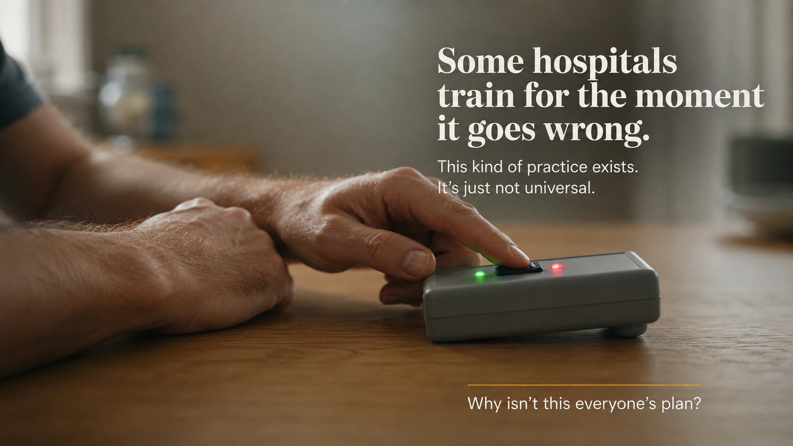
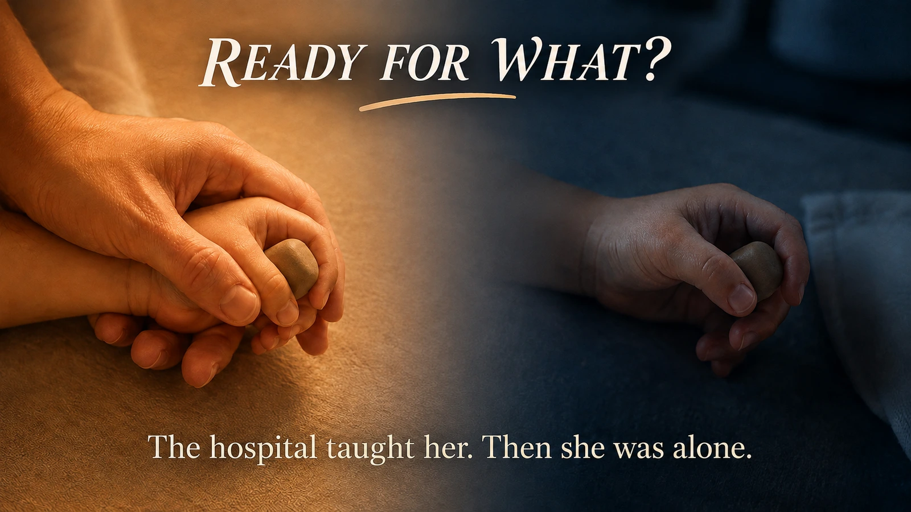

Catherine was taught.
She demonstrated it, in a hospital room, with a nurse watching.
She was told she was ready to go home.
The scene that follows is a reconstructed composite, not a reported account of a real family. No hospital, diagnosis, or device described here refers to an actual event — but the question it raises is real.
There was no reason for her to doubt any of it. She'd repeated the steps back correctly, twice. She'd asked the questions that occurred to her at the time. The nurse had nodded in the way that means you've got this, and the discharge paperwork said so too, in the flat, official language hospitals use for exactly this purpose.
Three nights later, at 12:40 a.m., the machine makes a sound it hasn't made before.
She's sitting up before she's fully awake, listening. Then a second sound joins the first. And her daughter has started crying at the same volume, on the same rhythm, as if the two sounds are arguing with each other.
Three things happening at once, and no one else awake in the house to tell her which one matters first.
The folder from the hospital is still on the counter. Nothing in it has changed.
So what, exactly, had "ready" established?
In short: Research on hospital discharge teaching shows that demonstrated competence at discharge — the standard test of "readiness" — doesn't reliably predict whether a caregiver can respond when a real situation looks different from what she was shown. Nurses report that patient teaching and care planning are among the tasks most often skipped under time pressure, but staffing shortages explain only a fraction of the broader link between understaffed hospitals and readmissions. Teach-back, a stronger discharge-teaching method, improves how ready caregivers feel — but hasn't clearly reduced return visits in the two best-available studies. No study has yet measured what happens when a caregiver meets a real variation of what she was taught, rather than the exact scenario she rehearsed.
The Easiest Explanation
The most obvious place to look is time — whether Catherine's nurse actually had enough of it that day.
In 2009, researchers Beatrice Kalisch, Gail Landstrom, and Robert Williams surveyed 459 nurses across three hospitals about which parts of their job routinely didn't get finished on a busy shift. Assessment tasks went unfinished for 44% of respondents. Broader categories of care — interventions, basic care, and care planning, which includes discharge teaching — went unfinished for more than 70%. Across Kalisch's wider body of research, discharge planning and patient education show up again and again as among the tasks nurses report skipping first when time runs short. The pattern is consistent: tasks that trigger an alarm when skipped tend to survive a hard shift. The ones that don't tend to shrink quietly, without anyone deciding to shrink them.
A nurse can be rushed and still give the medication. She can't always give the explanation the same protection.
So it's tempting to stop there — the nurse ran short on time, the teaching thinned out, and the gap Catherine met at home began as a gap on the hospital floor. But the larger picture doesn't hold that shape. A 2025 analysis of 573 U.S. hospitals, led by Connell, Yu, and Lake, traced how much of the well-known link between understaffed hospitals and higher readmissions could be explained by missed care, teaching included. The answer was roughly ten percent.
Ten percent is real. It leaves ninety percent somewhere else. Catherine could have received careful, unhurried, textbook teaching, and still ended up exactly where she is — sitting up at 12:40 a.m., trying to sort three sounds into an order.
What Knowledge Does Once It's Alone
If time isn't the main answer, the next place to look is what happens to teaching after it leaves the room where it happened.
There's a difference between knowing something with someone standing beside you and knowing what to do when the situation no longer looks quite the same. You can repeat the steps correctly. You can perform them correctly. And still hesitate when the sequence changes.
Researchers who study learning call this gap transfer — the finding that knowledge learned under one set of conditions doesn't automatically travel to unfamiliar ones. That principle is well established in general learning research. Nobody has tested it on parents managing home medical equipment at 1 a.m. This article is applying a general finding to a particular kind of night, not citing a study that watched Catherine's night happen.
Some hospitals have tried to build teaching that survives the shift anyway. Teach-back has a parent explain the reasoning in her own words rather than repeat steps. Simulation goes further, having her respond to a scripted scenario instead of watching one clean demonstration.
A 2025 study by Mostafanezhad and colleagues, following 66 mothers of preterm infants in a NICU in Iran, found that teach-back significantly improved how ready those mothers said they felt at discharge (P = 0.001). It did not produce a statistically significant drop in their infants' readmissions — the result landed at P = 0.054, just short of the conventional threshold.
A separate 2022 study of 648 patients discharged from a Dutch hospital emergency department found a similar pattern: teach-back was linked to fewer return visits within 7 days (odds ratio 0.23) and within 30 days (odds ratio 0.42) — but both confidence intervals were wide enough to cross 1.0, meaning the result can't be called statistically reliable.
Readiness went up, twice, in two different settings. What happened afterward didn't clearly follow it down the same path. Maybe readiness isn't one thing. Maybe the word is doing more work than the measurement behind it.
Where Training Already Changes Shape

There's one more place worth looking — at what hospitals do when the stakes are impossible to look away from.
For infants going home on a tracheostomy or a ventilator, a number of programs have moved past a single bedside demonstration entirely. Parents train on manikins. They work through scenarios built to be unfamiliar, not identical to what they've already seen. The goal isn't can you do what I just showed you — it's closer to can you still function when the situation stops looking like what I showed you.
No study puts feeding-pump education and tracheostomy simulation side by side and measures a gap between them. That absence isn't proof the gap exists. It's just an absence — but it sharpens the question. Hospitals already know how to train someone for the moment reality stops matching the plan. They do it for the families whose risk is loudest. Whether that same idea reaches the rest of newborn discharge teaching is, simply, unknown.
The Measurement Nobody Has Built
Researchers have studied discharge readiness. They've studied the quality of teaching. They've studied missed nursing care. They've studied staffing. They've studied teach-back. They've studied simulation. They've studied whether parents feel confident.
Down in the kitchen, however, none of those metrics are keeping watch.
Then, at home, something happens that is similar to — but not identical with — the demonstration. Does the parent recognize what's happening. Can they transfer what they learned to a version of it they haven't seen. Can they decide what matters first. Can they do it tired, alone, interrupted, and frightened.
No study has taken parents who received standard discharge teaching, sent them home, and measured what happens when they meet a variation of what they were shown — not the identical sound, a jagged cousin of it, arriving at 12:40 a.m. instead of in a well-lit room with someone standing beside them.
That's a narrower claim than it might sound, and it's worth being precise about where the line actually falls. Researchers have gotten good at measuring whether teaching happened, whether a parent feels ready to leave, and even whether a parent can accurately recall what they were told once they're home — one 2022 pilot tool tested with hospitalized children's caregivers roughly doubled how often a parent's recollection of warning signs matched what the medical team had actually said, from 58% to 90%. What's still missing is narrower and harder than recall: not whether a parent remembers the instructions, but whether they can recognize and respond to a version of the problem that doesn't look exactly like what they were told to expect. As far as this article can find, nobody has directly measured that specific transfer.
There's already a real checkpoint built into roughly this window, worth naming precisely because of how narrow it is: the American Academy of Pediatrics recommends newborn follow-up within 48 to 72 hours of discharge, specifically to catch feeding problems and jaundice. That checkpoint exists, and it works for what it was built to catch. It was never designed to test whether a parent can recognize a problem that doesn't look like the ones on that list.
A Framework for Thinking About "Ready"

Maybe ready only sounds like a single destination.
A parent can be ready to repeat the steps back correctly. Ready to perform them once, under supervision. Ready to recognize the problem when it returns close to how she was shown it. Ready to respond when it doesn't return that way at all.
These four aren't categories the studies above set out to test — no single one of them tests these as a sequence, and none draws the line between them. This is a framework proposed here, in the space between what discharge research measures and what it doesn't. It matters because the first two are relatively easy to observe in a hospital: a nurse can watch them, a form can record them. The third is harder. The fourth is harder still — not from carelessness, not because parents can't manage it, but because you can't test someone's response to an unfamiliar situation without handing them an unfamiliar situation. Real life has a habit of doing that at exactly the moment nobody is standing beside you.
Why More Training Isn't the Answer This Article Is Reaching For
There's a temptation to end a piece like this with a solution. Add more training. Require simulation for every discharge, not just the highest-risk ones. Give parents longer sessions. Have nurses repeat everything twice. Build better instruction sheets.
Every one of those ideas is reasonable, and none of them addresses the actual gap this article has been describing. More repetition makes someone more ready to repeat. More supervised practice makes someone more ready to perform under supervision. Neither one, by itself, touches the harder two questions — recognizing a variant, adapting to one — because those can only be tested by conditions nobody can schedule into a discharge appointment. A better pamphlet doesn't solve a problem that was never about the pamphlet.
What This Article Is Not Saying
This isn't a story about incompetent nurses. It isn't a story about dangerous feeding equipment. It isn't proof that hospitals send parents home unprepared. And it isn't a story where a new training technique arrives at the end and solves the problem.
It's a story about a smaller gap, and maybe a more consequential one for being smaller: the gap between demonstration and life. Between having received information and having to interpret that information without the person who gave it to you standing there. Between a hospital's definition of readiness and what a parent's first night alone discovers that readiness actually has to hold up against.
So What Does "Ready to Go Home" Actually Mean?
Return to Catherine.
The hospital had real evidence that she could do what she'd been taught. The nurse's teaching mattered. Her questions mattered. Her demonstrations mattered. None of that becomes false because the situation at home looked different. It answered a particular question: can you do this. It didn't answer the others sitting quietly behind it — can you recognize this, can you tell what's changed, can you decide what matters first when three things happen at once.
That gap doesn't mean the hospital failed her. It means "ready" may hold several kinds of readiness that aren't equally visible from a hospital bed — and that the last of them, the one she needed at 12:40 a.m., was never the one anyone had a way to check.
The folder is still on the counter. The instructions haven't changed.
Only the question has.
Before You Leave: 10 Questions That Test a Different Kind of Readiness
The point isn't to leave the hospital knowing everything. No first-time parent will. And it isn't to turn discharge into another exam she can fail.
It is to ask a slightly different set of questions — questions that move beyond Can you repeat what we showed you? and closer to What happens when you're the one holding the baby and something doesn't look quite right?
The answers will be different for every mother and every newborn. The hospital's own instructions should always take priority over a general article like this. But before leaving, it's worth making sure these ten things aren't merely written down somewhere — but are clear enough that you could find the answer at home.
1. What exactly is the plan for the next feed? Not just how to feed, but what your particular plan is — and what to do if the feeding doesn't go the way you practiced.
2. What did the hospital actually find about jaundice and bilirubin? Ask whether it was measured, what the result means, and what follow-up is arranged. The AAP recommends newborn follow-up that specifically includes feeding and jaundice assessment, timed to the baby's age and risk factors.
3. What should I expect from diapers and feeding — and what would make you want to hear from me? Ask what pattern your baby's clinician expects for your baby specifically, and what would count as a reason to call. Having a threshold you understand matters more before you're tired enough to doubt your own judgment.
4. If something changes at home, who do I call first? Not just a number — who to call during office hours, after hours, and what specifically means call now versus seek emergency care. Write the answer somewhere you can find it without searching. At 12:40 a.m., reducing the number of decisions matters.
5. Can I show you the care — and can you show me what happens when it doesn't go perfectly? This is the question most directly connected to Catherine. If there's equipment, medication, or a task you'll perform at home, don't stop at a successful demonstration. Ask what's most likely to go wrong, and what you should do if what you see is different from what you were just shown. The goal isn't to turn every discharge into a simulation lab — it's to make room for one small rehearsal of uncertainty.
6. What equipment or supplies will I actually need tonight? If there's medical equipment involved, know what checks are expected and who to contact if it behaves differently than shown. If not, the simpler version still applies: a safe sleep space, feeding supplies, medications, and contact information, arranged before you need them.
7. Where exactly is my follow-up appointment — and what is it supposed to check? "Follow up with your pediatrician" isn't a plan. A plan has a date, a place, and a reason. For healthy newborns, the AAP recommends an evaluation within 3–5 days of birth and within 48–72 hours of discharge, with attention to feeding and jaundice.
8. What does my recovery plan say? It's easy for the baby's instructions to take over the entire conversation while the mother leaves with a vague sense that she's supposed to "take it easy." Ask what symptoms should prompt a call for you, not just the baby — heavy bleeding, severe headache or vision changes, and shortness of breath are among the standard warning signs postpartum patients are advised to act on quickly.
9. Who is the second person who knows the plan? If someone else will help with care, don't assume they absorbed the same instructions just by standing in the room. If you're going home alone, that's a reason to ask what support the hospital can point you to — not a reason to skip the question.
10. What would make you want me to call even if I'm not sure? Save this one for last, because the most useful thing to leave with may not be another instruction. It may be permission — a clear next step for exactly the moment when certainty disappears.
These ten questions don't solve the problem Catherine's night exposes. They aren't a new definition of clinical readiness, and they aren't a validated discharge framework. They do something smaller: they move a parent one step beyond the demonstration. Because the more useful question before leaving may not be can you do this — it may be what will you do if what happens at home isn't exactly what happened here.